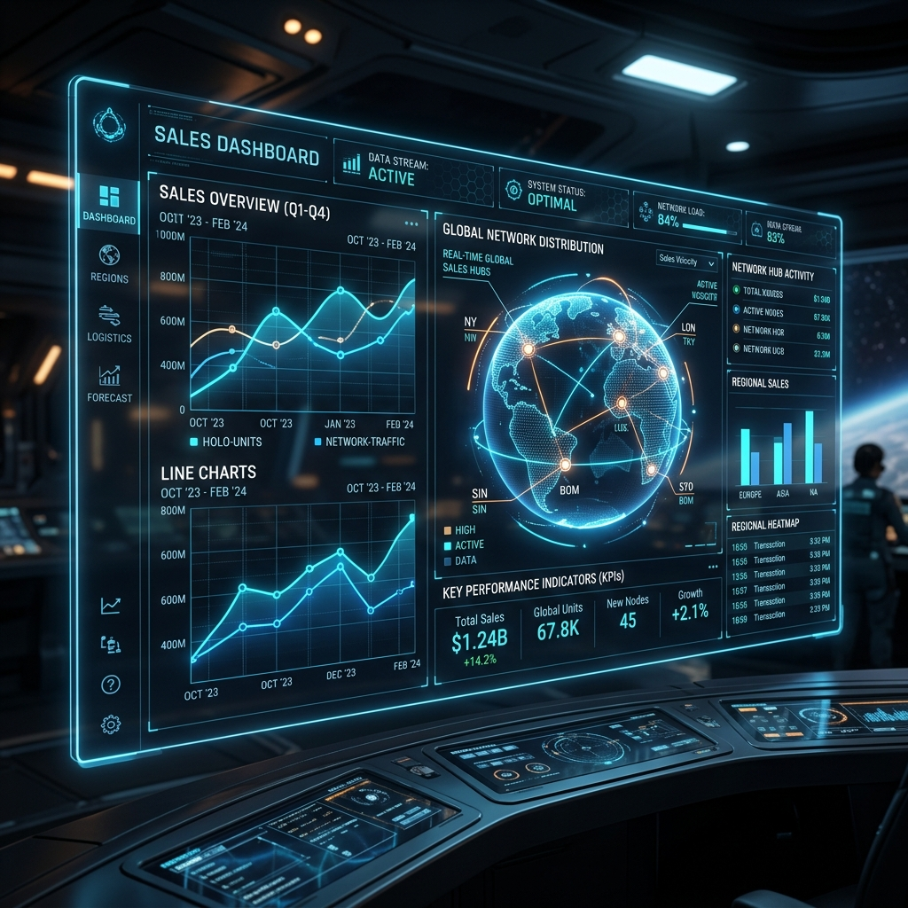
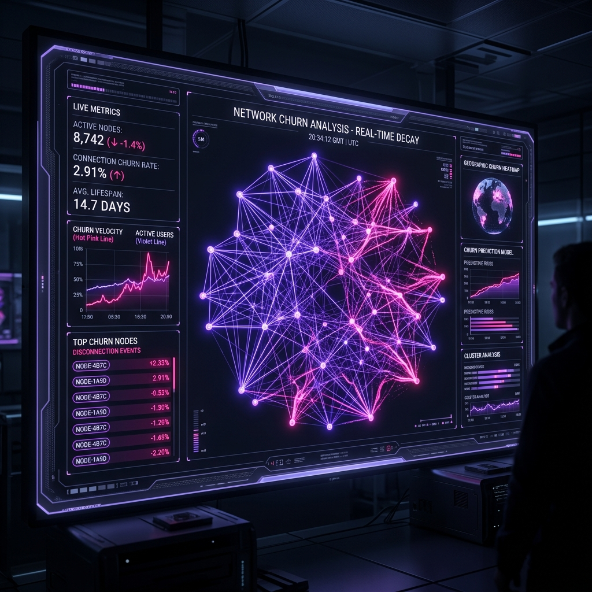

Koushik Reddy
Navigating deep data space to uncover gravitational patterns. Building scalable analytical models, dynamic dashboards, and pipelines that pull actionable insights out of cosmic chaos.
Zero Gravity Story
I am a Data Analyst specializing in transforming complex, unstructured datasets into clear business value. My methodology focuses on data gravity—structuring databases and pipelines so that insights pull themselves together naturally.
With solid foundations in automated processing and telemetry visual design, I construct reports that enable immediate and precise navigation through business performance matrices.
Skill Orbits
Telemetry Systems

